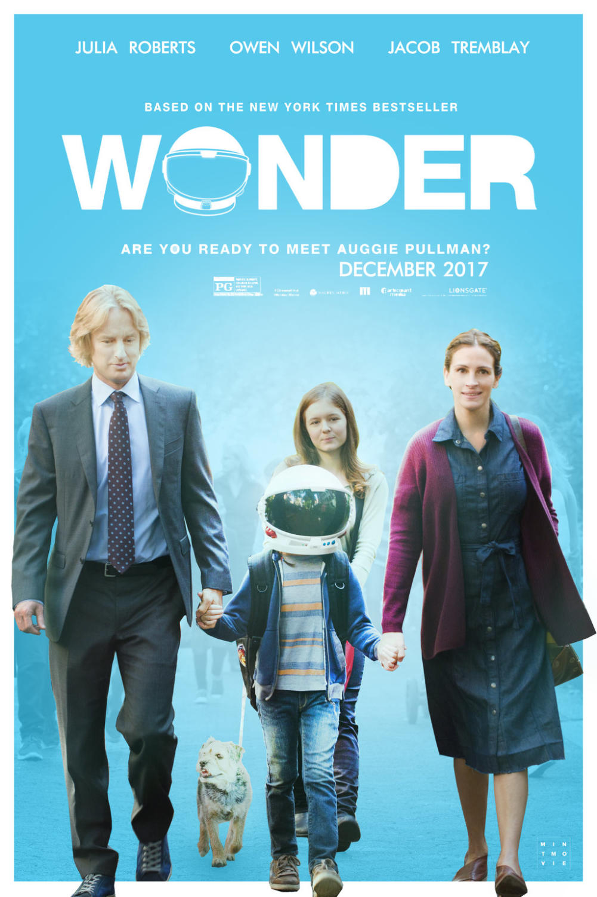

Back to Main Page
Wonder (DVD)

- Title: Wonder
- Director: Stephen Chbosky
Based on book by R. J. Palacio
- Publisher: Lionsgate
- Price: $19.99 CAD
- Summary: Wonder is the story of a young boy named Auggie, born with facial differences that kept him homeschooled, adventuring into the world of public school. Audiences will watch as Auggie combats discrimination, hardships and builds lasting relationships as he learns to navigate this new world and teaches others that it is our differences that make us who we are.
- Reviews
- Based on the R.J. Palacio novel of the same name, “Wonder” follows a year in the life of August Pullman (Jacob Tremblay), Auggie, for short. He was born with a genetic abnormality that has required him to undergo surgeries and medical treatments since his earliest days.
Director Stephen Chbosky has managed to take a story that could have been painfully mawkish and made it genuinely moving in (mostly) understated ways. The makeup work here is solid and believable, revealing Auggie’s sad eyes behind downturned facial lines and nubs of skin for ears. He’s a prepubescent Rocky Dennis. The script, co-written by Chbosky, Steve Conrad and Jack Thorne, is wise to establish quickly that Auggie is a regular kid in every other way. He loves “Star Wars” and Minecraft. He has an aptitude for science, a sly sense of humor, and an active imagination that helps him navigate uncomfortable situations. (“Wonder” occasionally dabbles in magical realism, but in ways that are more amusing than distracting.)
Uniformly strong performances help ground the story. Tremblay, who showed instincts beyond his years in the devastating 2015 drama “Room,” provides both a sweetness and an intelligence to his 10-year-old character that make him accessible even when he’s wearing an astronaut helmet to hide his face. Julia Roberts and Owen Wilson find just the right notes as his supportive parents. But the real surprise here is Izabela Vidovic as Tremblay’s older sister, who’s been generous enough to allow her brother to be the center of the family’s attention at the expense of her own emotional need.
His mom, Isabel (Roberts), put her career on hold to homeschool him from the beginning in the family’s Brooklyn brownstone. But now that Auggie is of middle school age, Isabel and his dad, Nate (Wilson), decide to send him to Beecher Prep so he’ll learn to socialize with other kids and become more comfortable in the outside world. All are understandably apprehensive about this major shift, fraught as it is with the potential for bullying and isolation. And indeed, when his parents walk him to the front gates and send him off on his own for the first time, the kids on campus stop their conversations to gawk and part for him. But Chbosky depicts this event matter-of-factly, allowing the tension of the moment to emerge naturally.
There are some familiar figures here: the hip teacher who gives innovative assignments that just happen to coincide with the film’s themes (Daveed Diggs); the mean rich kid who torments him alongside a posse of brutes (Bryce Gheisar); the shy girl who might become an unexpected friend (Millie Davis). But the effortless connection Auggie strikes up with a kid named Jack Will (Noah Jupe)—who also feels like an outsider as a working-class scholarship student—is one of the film’s truest joys, as well as a source of legitimate drama.
Just when “Wonder” seems to be settling into a routine at school, it shifts and revisits that first day from a variety of other characters’ perspectives. So we learn what happened to Auggie’s lonely sister, Via, when she met a cute new boy (Nadji Jeter) and dared to sign up for the high school play. We get a glimpse into Jack Will’s home life, which enriches the significance of his relationship with Auggie. We find out what’s really going on with Via’s lifelong best friend, Miranda (Danielle Rose Russell), who suddenly snubbed her at the start of the school year.
As he did with his insightful young adult drama “The Perks of Being a Wallflower,” Chbosky handles major adolescent events with decency and grace. The cumulative effect—as overly simplistic as it may sound – is the powerful understanding of what it feels like to walk in someone else’s shoes. The emotion of this enlightenment sneaks up on you in quiet ways. Even Wilson, whose character feels underwritten beyond providing comic relief during moments of family tension, gets perhaps the most heartbreaking, uplifting line in the whole film. You’ll shed a tear or two—especially if you’re a parent—and they’ll be totally earned.
All of which makes it so frustrating that “Wonder” throws that restraint and goodwill out the window in its finale and turns wildly sentimental. Chbosky cranks up the feel-good with a climax full of wild applause at the most clichéd place possible: a school assembly. How is it possible that so many cinematic moments of truth take place before a packed auditorium?
But the film does so much so well for so long that its pat conclusion feels forgivable. Early on during a screening of “Wonder,” when the film first reveals the scars and deformities that mark the hero’s face, my eight-year-old son turned to me and whispered, “He looks weird.” Once the movie was over, as we were walking out of the theater and I asked him what he thought, he exclaimed: “I loved it!” Such is the film’s transformative power. It is a machine for creating empathy.
- Auggie Pullman (Jacob Tremblay), the central character in Stephen Chbosky’s “Wonder,” is a brainy 10-year-old boy with a sweet high voice and a congenital facial deformity, whom numerous corrective surgeries have left looking like a cherub after a car accident. His left eye tugs downward as if a teardrop were falling from it; his ears are bulbs of flesh, and his face is framed by a pinkish ring of scar tissue. That said, he’s not the Phantom of the Opera. He’s just an ordinary kid whose looks take a bit of getting used to.
Auggie is a science geek who loves “Star Wars” and Minecraft, ice cream and X-Box sports games; he’s fueled by all-American fantasies of going to outer space. (He likes to walk around in a toy astronaut helmet that conceals him and feeds his dreams.) His face, which looks youthful and old at the same time, is jarring the first time you see it, but the more you take in his innocent if slightly askew elfin features, the more his soul shines through. Any thoughts that he’s ugly, or odd, are really in the eye of the beholder.
Movies about people with dramatic disfigurements run a high risk of being mawkish and manipulative. Yet maybe because the dangers of grotesque sentimentality loom so large, a handful of filmmakers, over the years, have made a point of taking on stories like this one and treading carefully around the pitfalls. David Lynch did it in “The Elephant Man” (1980), his shrewdly restrained, underbelly-of-London Gothic horror weeper, which revealed John Merrick, beneath his warped and bubbled flesh, to be a figure of entrancing delicacy. Peter Bogdanovich did it in “Mask” (1985), his straight-up tale of a teenager with a face of scowling strangeness who came to embrace the person he was.
“Wonder” is a movie that belongs in their company. It’s a very tasteful heart-tugger — a drama of disarmingly level-headed empathy that glides along with wit, assurance, and grace, and has something touching and resonant to say about the current climate of American bullying. At the same time, the film never upsets the apple cart of conventionality. “Wonder” is an honest feel-good movie, but it lacks the pricklier edges of art.
Auggie has been home-schooled by his mother, Isabel (Julia Roberts), in their cozy Brooklyn brownstone. But now that he’s 10, she and Auggie’s dad, Nate (Owen Wilson), have made the decision to send him to middle school. They know they can’t shield him from the world forever, and they have no desire to.
Roberts and Wilson make a compelling team; they play the Pullmans as supremely sensitive, loving parents who have the occasional tug-of-war spat about what’s best for their special son. Yet both want him to stand up for himself, and to be part of a community. Auggie wants that, too, though the kids he meets at Beecher Prep School don’t make it easy. By the end of his first day there, he has already been nicknamed (after one of his favorite “Star Wars” characters) “Barf Hideous,” and he chops off the rat-tail braid that’s his only fashion statement — a testament to the destructive power of peer pressure. Just enough of the kids treat Auggie like a freak to make the belief that he is one tough for him to shake.
This is the third feature directed by Chbosky, the novelist who actually got his start as a filmmaker (with the 1995 indie “The Four Corners of Nowhere”), and it was his second, “The Perks of Being a Wallflower” (2012), that established him as a major directorial voice. Adapted from his own first novel, “Perks” was the most remarkable coming-of-age movie in years, a drama that took in, with astonishing authenticity, the pleasures and perils of teenage life. (It also used David Bowie’s “Heroes” in a way that’s so transporting it trumps every musical sequence in “Baby Driver.”) “Wonder” is a movie by the same sharp-eyed, open-hearted, close-to-the-ground filmmaker. Chbosky, working in the tradition of Jonathan Demme, doesn’t hype what he shows you, and he cuts to the humanity of everyone on screen, even those who act badly. (He has a touching refusal to demonize.)
“Wonder,” adapted from R.J. Palacio’s 2012 novel (which took its title from the 1995 Natalie Merchant song about overcoming disfigurement), is a less audacious film than “The Perks of Being a Wallflower.” But Chbosky’s intense understanding of the layered personalities of kids is a rare gift. He lets the movie breathe by refusing to restrict the drama to Auggie’s point of view. It’s built around his gentle sadness and yearning, but it opens up into chapters told from the vantage of Jack (Noah Jupe), his science-class partner, who looks like he might be turning into Auggie’s buddy, only to leave him with a sense that he can’t trust anyone; and Auggie’s high-school sister, Via (Izabela Vidoovic), who’s the most complicated character in the movie. She has grown up in a family so organized around Auggie that her own needs can never come first. She wouldn’t think to question that, but the dynamic has graced her with both compassion and a hidden wound, and Vidovic’s pensive presence lends her scenes a rapt center of gravity.
Chbosky has a sixth sense for how to let a drama flow from anecdote to anecdote. Auggie’s favorite holiday, Halloween, leads to the moment when he overhears Jack, goaded by the smug, fashionable Julian (Bryce Gheisar), snarking to the other kids about him — a devastating betrayal, but one that turns out to be crucial to cementing their friendship. Jack can’t get past his prejudice until he has outed it. “Wonder” is a movie that’s finely attuned to what bullying is actually about: kids walling off their feelings, giving into the dark side of themselves to be superior. Bullies, of course, weren’t born bad, but in “Wonder” the idea is no pious abstraction — it plays out in every encounter between Auggie and those who would treat him meanly. The scenes are really about how his presence is a threat to their too-cool-for-schoolness.
“Wonder,” as effective as it is, is a movie in which everything has a way of working out with tidy benevolence. Via goes from being shunned by her best friend (Danielle Rose Russell), who has joined a hipper clique, to falling for a charismatic kid (Nadji Jeter) from the drama club to trying out for a student production of “Our Town” to winning her friend back to becoming the understudy who knocks ’em dead on opening night. Auggie, over the course of fifth grade, goes from being the school goat to a school hero. Yet Jacob Tremblay, acting from behind his transformative make-up, roots that journey in something real: the fact that who you are, whether you look like Auggie Pullman or someone more “normal,” can be a prison or a liberation, depending on the path you choose. Of all the films this year with “wonder” in the title (“Wonderstruck,” “Wonder Woman,” “Wonder Wheel,” “Professor Marston and the Wonder Women”), this is the one that comes closest to living up to the emotional alchemy of that word.
- Reason for Purchase: I chose this DVD because it is a film that touches with several of the issues that the demographic of Beak City will find interesting. Namely, the film deals with issues of discrimination and ableism in a way that is educational and easy for all audiences to understand. The film also showcases the impact that bullying has on individuals through the journey of Auggie and his classmates. Lastly, this is a great film to show all ages, and due to there being a new high school being built and families from other countries joining it is a good idea to have a film that showcases the importance of acceptance and the fact that all people are not alone. I chose a film over an eBook or audiobook since it follows the libraries vision statement through the variety of languages the film can be viewed in, the permanent value of the film and the fact that it reflects issues relevant to the contemporary life and culture.